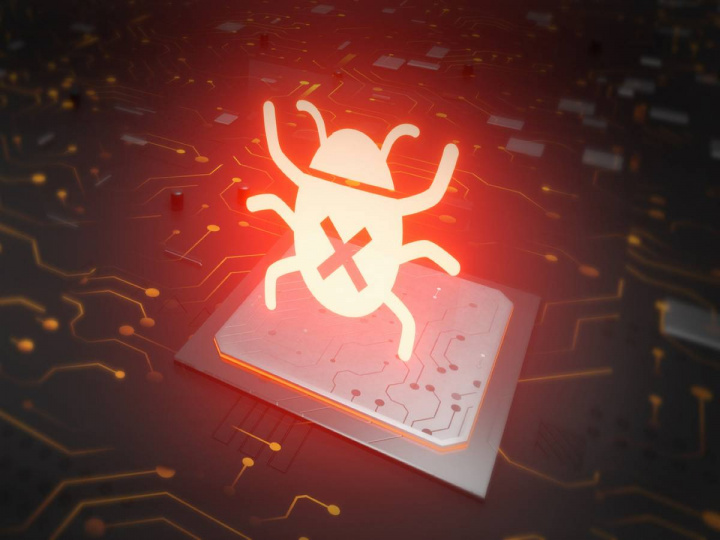

"Ciberseguridad" en la era digital: Protege tus datos en un mundo conectado.
En un mundo cada vez más interconectado, la ciberseguridad se ha convertido en una preocupación vital.
¿Qué es la ciberseguridad?
La ciberseguridad abarca una amplia gama de técnicas y estrategias diseñadas para prevenir y detectar ataques cibernéticos, garantizar la confidencialidad, integridad y disponibilidad de los datos, y mitigar los posibles daños causados por las amenazas en línea.
Amenazas cibernéticas más comunes:
-
Phishing
Es un tipo de ataque donde los ciberdelincuentes intentan engañar a las personas haciéndose pasar por entidades legítimas.

-
Malware
Estos programas se infiltran en los dispositivos y sistemas sin autorización y pueden dañar, robar o bloquear el acceso a los datos.
 -
Ransomware
Es un tipo de malware que bloquea el acceso a los datos o sistemas y exige un rescate para restaurar el acceso.
-
Robo de datos
Consiste en el robo de información personal, financiera o sensible de los usuarios para luego usarla o venderla.
Mejores prácticas de ciberseguridad
-
Utilizar contraseñas seguras
Elige contraseñas únicas y fuertes para tus cuentas en línea, evita utilizar la misma contraseña en diferentes servicios y considera el uso de administradores de contraseñas para gestionar tus contraseñas de manera segura.
-
Mantener el software actualizado
Asegúrate de mantener tu sistema operativo, aplicaciones y programas de seguridad actualizados. Las actualizaciones a menudo incluyen parches de seguridad que solucionan vulnerabilidades conocidas.
-
Utilizar autenticación de dos factores (2FA)
Habilita la autenticación de dos factores siempre que sea posible. Esta función añade una capa adicional de seguridad, ya que requiere una segunda forma de verificación, como un código enviado a tu teléfono, además de la contraseña.
-
Navegar de forma segura por Internet
Evita hacer clic en enlaces sospechosos o descargar archivos adjuntos de fuentes no confiables. Verifica la autenticidad de los sitios.Y ante la duda no navegues por ese sitio. Es una buena manera de prevenir.
Herramientas y software de seguridad
Existen varias herramientas y software de seguridad que pueden ayudarte a proteger tus dispositivos y datos contra amenazas cibernéticas. Estas son algunas opciones comunes:
-
Antivirus
El software antivirus es una herramienta esencial que ayuda a detectar y eliminar malware de tu sistema. Escanea archivos, programas y actividades en busca de signos de infección. Además, los antivirus suelen tener funciones de protección en tiempo real para evitar que el malware se ejecute en primer lugar.
-
Firewall
Un firewall es una barrera de seguridad que monitorea y controla el tráfico de red entrante y saliente. Puede bloquear conexiones no autorizadas y filtrar el tráfico malicioso, protegiendo así tu red y dispositivos contra intrusiones no deseadas.
-
Gestor de contraseñas
Los gestores de contraseñas te permiten almacenar y gestionar de manera segura tus contraseñas. Estas herramientas encriptan tus contraseñas y las guardan en una bóveda protegida por una contraseña maestra. De esta manera, solo necesitas recordar una contraseña para acceder a todas tus cuentas en línea.
-
Software de detección de intrusiones (IDS)
El software IDS monitorea el tráfico de red en busca de patrones y comportamientos sospechosos. Puede detectar intentos de intrusión, ataques de denegación de servicio y otros comportamientos maliciosos, y enviar alertas para que puedas tomar medidas.